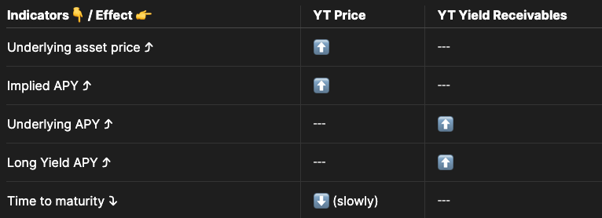

深入解析 Pendle Finance V2：解锁 DeFi 收益的新方式
深入解析 Pendle Finance：解锁 DeFi 收益的新方式
引言
Pendle Finance 是一个专注于去中心化金融（DeFi）收益交易的平台，旨在通过收益代币化和收益交易，为用户提供全新的收益策略和机会。通过将收益生成型代币（Yield-Bearing Tokens）分解为本金代币（Principal Tokens，PT）和收益代币（Yield Tokens，YT），Pendle 解锁了这些资产的流动性，并为用户提供了多样化的收益策略。
本文将深入探讨 Pendle 的关键概念、核心机制，以及如何利用其平台实现被动收益和主动收益交易。
一、Pendle 的两个关键概念
1. 收益代币化（Yield Tokenization）
Pendle 通过将收益生成型代币（如 stETH、GLP、JitoSOL、LP Tokens 等）进行代币化，将其分解为：
- 本金代币（PT）：代表在到期日赎回标的资产的权利。
- 收益代币（YT）：代表在到期日之前获取标的资产产生的收益的权利。
这种代币化方式允许用户在不影响原始资产收益的情况下，灵活地进行交易和策略部署。
2. 收益交易（Yield Trading）
Pendle 创建了一个 DeFi 收益交易市场，用户可以通过 Pendle 的 AMM 池交易 PT 和 YT。这样，用户可以针对不同的市场预期和风险偏好，选择适合的收益策略，包括固定收益和收益杠杆。
二、两种收益策略
1. 被动收益策略（Passive Earning）
（1）固定收益
- 机制：通过购买 PT，用户可以在到期日以固定的价格赎回标的资产，获得固定收益。
- 应用：适合希望获得稳定收益的用户，类似于传统金融中的零息债券。
（2）资产增值
- 机制：利用已有的收益生成型资产，在 Pendle 上进行质押，获得额外的收益。
- 应用：在持有资产的同时，获得额外的无风险收益。
2. 收益交易策略（Yield Trading）
（1）做多收益（Long Yield）
- 机制：通过购买 YT，用户可以获得标的资产在到期日前产生的收益，且无需担心清算或预言机风险。
- 应用：适合对标的资产收益看涨的用户，利用杠杆效应放大收益。
（2）策略组合
- 机制：用户可以混合使用被动和主动策略，执行复杂的收益优化和风险管理策略。
- 应用：满足不同风险偏好和市场预期的投资者需求。
三、收益代币化的原理
1. 基础公式
- 到期日前：1 PT + 1 YT = 1 单位标的资产（Underlying Asset）
- 到期日后：
- 1 PT = 1 单位标的资产
- 1 YT = 0（收益权已兑现）
2. PT 和 YT 的功能
（1）本金代币（PT）
- 定义：在到期日赎回 1 单位标的资产的权利。
- 收益来源：持有 PT 的价值在于购买价格与到期日赎回价值之间的差额，即固定收益。
- 类似概念：传统金融中的零息债券。
（2）收益代币（YT）
- 定义：在到期日前获取标的资产产生的收益的权利。
- 收益来源：标的资产在持有期间产生的所有收益，如质押奖励、交易费用等。
- 优势：无需贷款和杠杆，不存在清算风险，获取收益的杠杆敞口。
- 类似概念：传统金融中的分离式票息（Detached Coupon）。
3. 在不同时间点的操作
到期日前：
- 铸造：将收益生成型代币拆分为 1 PT 和 1 YT。
- 赎回：通过持有 1 PT 和 1 YT，合并赎回 1 单位标的资产。
- 收益领取：YT 持有人可以实时领取累计收益。
到期日后：
- PT 赎回：持有 PT 的用户可以直接以 1:1 赎回标的资产，无需 YT。
任何时刻：
- 交易 PT 和 YT：通过 Pendle 的 AMM 池进行交易，价格机制确保 PT 价格 + YT 价格 = 标的资产价格。
四、Pendle Earn：基础固定收益策略
1. 存款机制
- 类似性：与传统金融中的定期存款或存款凭证（CD）类似，但没有资金锁定限制，可以随时退出。
- 收益计算：例如，存入 1 个 stETH，到期日赎回 1.06 个 stETH，获得 0.06 个 stETH 的固定收益。
- 优势：
- 风险敞口低：与持有标的资产的风险类似，在市场下跌时提供一定保护。
- 收益稳定：避免了 DeFi 中收益率波动和频繁更换农场的麻烦。
- 灵活性：可随时进入或退出，不受锁定期限制。
2. 流动性提供（LP）
机制：用户可以向 Pendle 的 AMM 池提供流动性，收益包括：
- 原生收益：
- 底层标的资产的协议收益（如 stETH 的质押收益）。
- 持有 PT 的固定收益。
- 交易手续费：来自 AMM 池的交易活动。
- 平台激励：Pendle 平台的代币奖励 $PENDLE，可以通过锁仓提升收益倍数。
- 原生收益：
优势：
- 无常损失低：由于池子的资产是 PT 和标的资产，价格高度相关，无常损失较小。
- 资金灵活：资产未被锁定，可随时退出。
- 策略多样：LP 行为可以作为收益优化或交易策略的一部分。
五、Pendle Trade：收益交易策略
1. 购买 YT（做多收益）
- 机制：通过购买 YT，用户可以获得标的资产在到期日前的所有收益。
- 优势：
- 杠杆收益：YT 的价格远低于标的资产价格，提供收益的杠杆敞口。
- 无清算风险：无需借贷或杠杆交易，避免了清算和预言机风险。
- 额外收益机会：持有 YT 可能获得标的资产协议的空投或奖励。
2. 盈利条件
- YT 价格上涨：持有期间 YT 的市场价格上升。
- 实际收益高于预期：标的资产产生的收益超过购买 YT 的成本。
买入并持有 YT = 做多收益的利润 = 未来收益 - YT 成本 如果认为 average future APY 会高于 current Implied APY ，就可以买 YT
3. 策略应用
- 市场预期判断：在预期标的资产收益率上升时购买 YT。
- 收益最大化：利用 EigenLayer 等新兴协议的奖励，放大收益。
六、收益交易的重要概念
1. 基本恒等式
- PT + YT = 标的资产价格
- 价格关系：PT 和 YT 的价格负相关。
2. 关键指标
（1）标的资产年化收益率（Underlying APY）
- 定义：标的资产的 7 日移动平均收益率，用于评估一段时间内的收益表现。
（2）隐含年化收益率（Implied APY）
- 定义：当前市场对标的资产未来收益的预期，反映在 YT 的价格中。
- 影响因素：市场供需关系，买入 YT 增加，Implied APY 上升；卖出 YT 增加，Implied APY 下降。
（3）固定年化收益率（Fixed APY）
- 定义：持有 PT 可获得的固定收益率，数值上等于 Implied APY。
- 应用：用于评估 PT 的投资价值。
3. 策略时机

购买 YT 的时机：
- 当 Implied APY 低于预期的标的资产收益率时。
- 预期标的资产的收益率将上升。
出售 YT 的时机：
- 当 Implied APY 高于标的资产的实际收益率，YT 可能被高估。
- 预期标的资产的收益率将下降。
七、进阶收益交易策略
1. 做空收益（Short Yield）
（1）购买 PT
- 机制：持有 PT，可以在到期日赎回标的资产，获得固定收益。
- 策略：当预期标的资产的收益率将下降时，购买 PT 以获得高于市场预期的固定收益。
（2）盈利条件
- PT 价格上涨：持有期间 PT 的市场价格上升，可以提前出售获利。
- 固定收益优势：固定收益率高于预期的标的资产收益率。
2. LP + 收益交易
（1）通过 LP 做空收益
- 机制：向 Pendle 的 AMM 池提供流动性，持有 PT 和标的资产的组合。
- 优势：
- 额外收益：获得交易手续费和平台激励。
- 无常损失低：由于 PT 和标的资产价格相关性高，无常损失较小。
- 策略灵活：可作为看跌标的资产收益的策略。
（2）零价格影响模式（Zero Price Impact Mode）
- 机制：在提供流动性时，避免对 PT 和 YT 的价格造成冲击。
- 应用：适用于希望保持收益中性的用户，不持有 YT。
八、策略总结与应用场景
1. 策略选择
- 被动收益：适合希望获得稳定收益、风险偏好较低的用户。
- 收益交易：适合具有市场预期判断能力、希望获取更高收益的用户。
2. 风险管理
- 市场风险：标的资产价格和收益率的波动可能影响投资收益。
- 流动性风险：在极端市场条件下，PT 和 YT 的流动性可能下降，影响交易和赎回。
3. 应用场景
- 对冲策略：通过购买 PT，对冲标的资产收益率下降的风险。
- 杠杆策略：通过购买 YT，放大对标的资产收益的敞口。
- 套利机会：利用 Implied APY 和 Underlying APY 之间的差异，进行收益率套利。
九、结论
Pendle Finance 通过创新的收益代币化和收益交易机制，为 DeFi 用户提供了多样化的收益策略和机会。无论是希望获得稳定收益的用户，还是具有风险偏好的交易者，都可以在 Pendle 平台上找到适合自己的投资方式。
在 DeFi 市场日益成熟和复杂的背景下，Pendle 的出现为用户解锁了收益生成型代币的流动性，提供了更加灵活和高效的收益管理工具。然而，投资者在参与这些策略时，应充分了解相关风险，谨慎决策。
参考资料
免责声明：本文旨在提供信息交流，不构成任何投资建议。加密资产具有高风险，投资者应自行评估风险，谨慎参与。